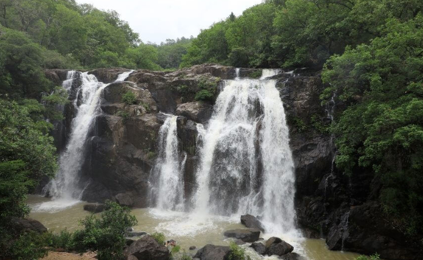

Perquín
Centro cultural con el Museo de la Revolución y paisajes montañosos ideales para el senderismo.

Promover el turismo histórico, cultural y natural de la Ruta de la Paz, fomentando el desarrollo económico local y preservando la memoria histórica de la región.
Ser reconocida como una de las rutas turísticas más importantes de El Salvador y Centroamérica, ofreciendo experiencias únicas que inspiren paz y esperanza.
La Ruta de la Paz recorre pueblos emblemáticos de Morazán y La Unión, marcados por la historia del conflicto armado salvadoreño. Hoy, estos lugares se transforman en espacios de memoria, cultura, gastronomía y naturaleza.
Centro cultural con el Museo de la Revolución y paisajes montañosos ideales para el senderismo.
Memorial histórico en homenaje a las víctimas de la guerra. Un lugar de reflexión y paz.
Pueblo pintoresco con cascadas y miradores espectaculares, perfecto para el ecoturismo.
Recorridos históricos, talleres de artesanías, festivales culturales, degustación de café y senderismo en paisajes naturales impresionantes.
Disfruta de platillos típicos como pupusas, tamales, yuca frita y bebidas artesanales de la región.
Fiestas patronales, festivales de música, conmemoraciones históricas y celebraciones culturales llenas de color.
“Una experiencia inolvidable, llena de historia y naturaleza. Recomiendo el tour guiado por Perquín.”
- Ana, turista de Costa Rica
“El Mozote es un lugar que invita a la reflexión y la paz. La gente es muy amable.”
- Carlos, visitante de México
“Las cascadas de Arambala son espectaculares, perfecto para los amantes del ecoturismo.”
- Sofía, viajera de El Salvador
La Ruta de la Paz se encuentra en el oriente de El Salvador, principalmente en el departamento de Morazán. Puedes llegar en autobús desde San Salvador (línea 301) o en vehículo particular tomando la carretera Panamericana hacia San Miguel y luego hacia Perquín.
Se recomienda consultar mapas y aplicaciones de navegación para rutas actualizadas.
Visualiza los principales destinos y puntos de interés de la Ruta de la Paz en el mapa interactivo.
Ver ruta completa en Google Maps